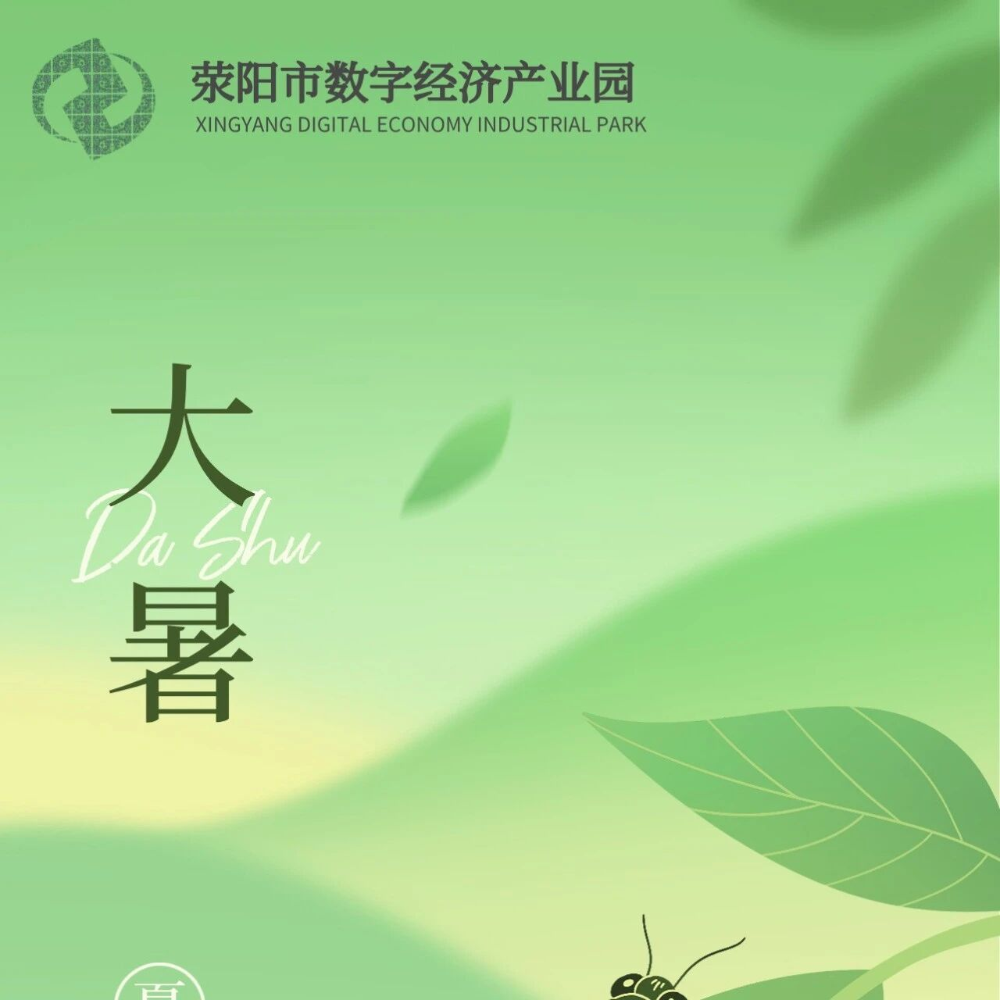
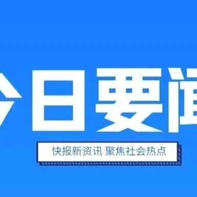

2026-08-01
品牌文化
盛世烟火安稳，感恩千里戍边人
盛世烟火安稳，感恩千里戍边人。公众号原文以图片内容为主体，已按运营方授权迁移图片至本站本地资源。
来源核验：微信客户端缓存分享元数据与原文页面核验；公众号运营方授权搬运全文 · 已生成站内全文
来源核验：微信客户端缓存分享元数据与原文页面核验；公众号运营方授权搬运全文 · 已生成站内全文
本站已按公众号运营方授权，收录微信客户端可见目录、搜狗微信公开索引中来源为“荥阳市数字经济产业园”的官方原发条目，并将已取得微信原文或缓存素材的文章生成站内全文页面。
以下文章已从微信原文、微信客户端缓存或运营方提供内容中完成正文与图片迁移，图片已下载为本站本地资源。

荥阳市数字经济产业园是荥阳市人民政府、荥阳城市发展投资集团有限公司、太能控股有限公司共同合作打造的新型数字化、信息化产业聚集地，项目以“新基建”产业为核心，以5G应用、人工智能、大数据、区块链等信息化技术为方向，高效搭建云链数字经济研究院、数字经济总部中心、科技创新创业中心，产业应用展示展览中心，为

荥阳市数字经济产业园是由荥阳市人民政府、荥阳城市发展投资集团有限公司、太能控股有限公司合作打造的新型数字经济产业聚集中心。项目位于荥阳市中心城区核心位置，依托“一心、三点、五轴、五区”的规划布局，高效搭建数字经济总部中心、企业创新孵化中心、成果展示交流中心，为企业提供安全、高端、国际化的发展、办公、

1 公司发展理念 不忘坚守初心 响应国家战略 科学精准定位 创建数字园区 携手行业龙头 数字赋能产业 创新校企合作 保障数字人才 引领技术进步 把握时代机遇 2 企业使命 赋能数字产业 贡献数字中国 影响数字世界 3 核心价值观 爱国、敬业、诚信、友善 4 企业愿景 打造全国数字经济产业示范区， 用

盛世烟火安稳，感恩千里戍边人。公众号原文以图片内容为主体，已按运营方授权迁移图片至本站本地资源。

逐光而行，不负骄阳。公众号原文以图片内容为主体，已按运营方授权迁移图片至本站本地资源。
当前，全球数字化转型加速演进，包括人工智能在内的数字技术正在引领新一轮科技革命和产业变革，深刻重塑亚太地区经济社会发展格局。“亚太地区是全球经济增长的重要引擎。APEC成员经济体应当携手抢抓数字和人工智能发展机遇，共同开展数字赋能务实合作。”工业和信息化部副部长熊继军在工业和信息化部举行的亚太经合组

5月13日，工业和信息化部在重庆市召开高质量行业数据集建设工作座谈会。会议深入学习贯彻习近平总书记关于数据发展和安全的重要论述，总结前期工作，交流先行先试阶段性进展，部署下一阶段重点工作，动员各地方、各行业全面推动工业数据开发利用，助力制造业数字化智能化转型。工业和信息化部副部长熊继军、重庆市副市长

2026年5月14日，济南爽朗信息科技有限公司与荥阳市数字经济产业园以线上会议形式召开合作洽谈会，聚焦数字技术赋能、产业生态共建等核心议题。济南爽朗信息科技有限公司客户经理刘乐、荥阳市数字经济产业园招商经理韩姗出席会议，双方就资源互补、业务协同、数字化升级等方向达成共识，为后续深度合作奠定坚实基础。
目录覆盖招商合作、政策荣誉、园区动态、品牌文化、行业观察等内容。已取得全文素材的条目可直接进入站内全文页，其余条目先保留可核验目录与摘要。